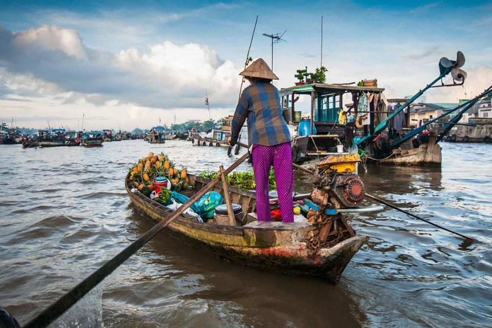
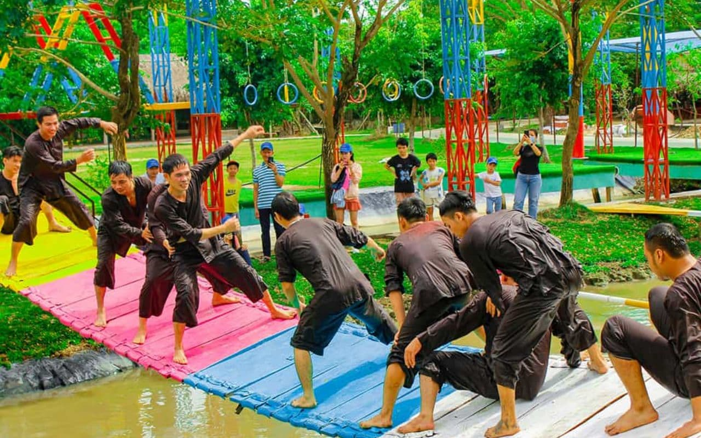

Top three activities to do in Can Tho

Visiting the Floating Market
Cai Rang Floating Market is one of the world's 19 must-visit food hubs

Camping and outdoor activities
Enjoy the fresh air and fun outdoor games at My Khanh ecological garden
Listening to Southern Vietnam folklore music
Enjoy the unique sound and songs of Don Ca Tai Tu Nam Bo
Meet Your Local Guide
Hi, my name's Smeagol. Having spent half a decade in Can Tho, I'm excited to share its most remarkable attractions and lesser-known gems with you."